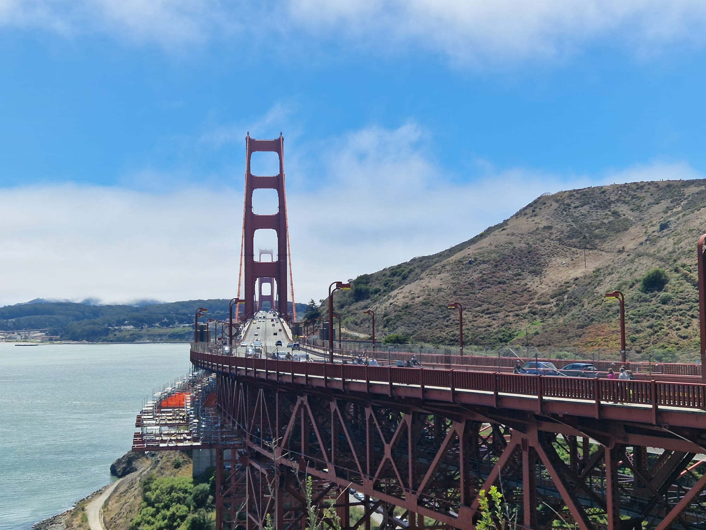

San Francisco
Auf dem Weg von Pacific Grove nach San Francisco entschieden wir, dass wir mit unserem Fahrzeug noch über die Golden Gate Bridge fahren, bevor wir dieses abgeben mussten. Dies war eine tolle Entscheidung, denn an diesem Tag hatte es für San Francisco relativ wenig Nebel und wir konnten die Brücke in voller Grösse bestaunen. Auf der anderen Seite der Brücke hielten wir beim offiziellen Vista-Point noch kurz an, um die obligatorischen Bilder zu knipsen.

Danach fuhren wir in die grosse Stadt hinein. Zuerst wollten wir im Hotel einchecken, doch da es in der näheren Umgebung keine Parkplätze gab, entschieden wir uns, zuerst das Fahrzeug abzugeben. Diese Abgabestelle war ja lediglich ein paar Strassen vom Hotel entfernt. Nun gut...wir fuhren also zur Adresse, welche wir bei der Entgegennahme erhalten hatten. Dort war das Car-Return auch bei einem Parkhaus angeschrieben, jedoch nicht in welchem Stockwerk sich dies befindet. Somit fuhren wir zuerst einmal in das Untergeschoss, weil dort keine Barriere angebracht war. Unten angekommen war zwar eine Autoentgegennahme, jedoch von der falschen Mietfirma...der nette Herr erklärte uns, dass wir in das dritte Geschoss müssen. Gesagt getan. Also fuhren wir nun in diesem wirklich sehr engen Parkhaus (aber wir erinnern uns ja, dass Mimi gesagt hat, dass sie die bessere Autofahrerin ist😁) in die dritte Etage wo wir nun auf die richtige Firma trafen...uff geschafft! Naja, die Ernüchterung kam dann sehr schnell, weil uns die etwas weniger nette Dame erklärte, dass hier zwar die Fahrzeugentgegennahme ist, die Abgabestelle jedoch nochmals 3 Blocks entfernt. Somit hiess es das Fahrzeug erneut durch das Parkhaus ins Erdgeschoss zu manövrieren. Natürlich ohne Kratzer und inklusive aller Spiegel😁 Danach war alles ein Kinderspiel...kurze Fahrt zur neuen Adresse, Fahrzeug abgeben und dann... ja und dann...wir sind ja jung und sportlich, also entschieden wir uns mit dem Gepäck zum Hotel zu laufen. Eigentlich waren es nur ein paar Blocks, jedoch war es dann doch etwas anstrengender als gedacht, mit dem ganzen Gepäck bis zum Hotel zu laufen. San Francisco ist ja nicht dafür bekannt, dass es keine Hügel gibt.😬
Dort angekommen, verstauten wir zuerst unsere Sachen im Hotel, bevor wir zu Fuss loszogen. Zuerst liefen wir durch Chinatown, wo viele Geschäfte und Restaurants wohl der Corona Pandemie zum Opfer gefallen sind. Danach liefen wir weiter zum bekannten Pier 39, wo wir dann auch unser Abendessen assen. Danach liefen wir alles zurück zu unserem Hotel, wo wir todmüde ins Bett fielen. Eins ist auf jeden Fall sicher: in San Francisco brauchten wir keine Angst zu haben, unser Schrittziel nicht zu erreichen.😉
Der nächste Tag startete sogleich mit der Besichtigung von Alcatraz. Dazu mussten wir vom Pier 33 mit dem Schiff zur Insel fahren, auf welcher das ehemalige Gefängnis steht.
Auf der Insel angekommen, war leider alles nur halb so spannend, wie erwartet. Leider waren mehr Teile der Insel und auch des Gefängnisses abgesperrt, als dass man besichtigen konnte, was sehr schade war. Man erhielt nicht wirklich einen Eindruck, wie das vor vielen Jahren einmal gewesen sein musste. Nun gut, wir schauten uns trotzdem alles an, was man konnte, und es waren schon ziemlich schlimme Umstände dazumal in diesem Gefängnis. Die Zellen war sehr klein, so dass man kaum Platz hatte sich darin zu drehen und nur mittels Gitterstäben zum Korridor hin abgetrennt. Absolut keine Privatsphäre. Naja...manchen Verbrechern würde dies auch heute noch gut tun🙈
Nachdem wir mit dem Schiff wieder zurück auf dem Festland waren, liefen wir zur Fisherman's Wharf. Auch dort mussten wir feststellen, dass Corona seine Spuren hinterlassen hatte und viele Ladenflächen leer standen. Daher entschieden wir uns noch einen kleinen Abstecher ins Madame Tussauds zu machen, da Remo noch nie ein solches besichtigt hatte. Danach liefen wir dem Hafen entlang und suchten ein thailändisches Restaurant, in welchem Remo vor 14 Jahren einmal sehr gut zu Abend gegessen hatte. Wir fanden an besagter Örtlichkeit tatsächlich ein thailändisches Restaurant, ob es sich dabei jedoch um dassslbe handelte wie dazumal, konnte Remo nicht mehr mit Sicherheit sagen. Auf jeden Fall war das Essen auch dieses Mal sehr lecker. 😉
Den dritten und auch bereits schon wieder letzten Tag in San Francisco starteten wir etwas gemütlicher, da wir für diesen Tag nichts spezielles geplant hatten. Nach einem reichhaltigeren Frühstück erkundeten wir zuerst noch etwas den Union Square und Mimi konnte es natürlich nicht lassen und quatschte einen Polizisten an, um nach einem Patch des SFPD (San Francisco Police Departement) zu fragen. Nachdem sie bereits in San Diego eine Enttäuschung hinnehmen musste, weil sie keinen Polizisten mit Patch fand, hatte sie dieses Mal mehr Glück und erhielt tatsächlich einen Patch von einem der Officers. Tja wie sagt man so schön: Happy wife, happy life😁
Nach einem kleinen erfolglosen Abstecher ins Shoppingcenter von San Francisco, beschlossen wir noch zum Coit-Tower zu laufen. Das Wort "Steil" wäre eine Untertreibung, wenn man den Weg zu diesem Tower beschreiben müsste. Dort angekommen hatten wir eine Aussicht über einige Teile der Stadt und des Hafens. Eigentlich hätte man auch noch auf den Tower hinaufgehen können, jedoch betrug die Wartezeit gut 30 Minuten und zudem war es so benebelt, dass man nicht einmal die Golden Gate Bridge gesehen hätte. Daher verzichteten wir darauf.
 Stattdessen beschlossen wir nochmals im feinen thailändischen Restaurant unser Abendessen zu geniessen und machten uns auf den Weg dorthin. Danach gingen wir zurück zu unserem Hotel, um die Koffer zu packen, denn morgen früh geht unser Flug nach New York City.
Stattdessen beschlossen wir nochmals im feinen thailändischen Restaurant unser Abendessen zu geniessen und machten uns auf den Weg dorthin. Danach gingen wir zurück zu unserem Hotel, um die Koffer zu packen, denn morgen früh geht unser Flug nach New York City.